Développement
Programmation système, orientée objet, algorithmique, interfaces et développement web.
Étudiant ingénieur en informatique
Étudiant à l'EPITA, je développe des projets mêlant programmation, interfaces, intelligence artificielle et travail d'équipe.
Qui je suis
Je suis Adrien Le Berre, étudiant en ingénierie informatique à l'EPITA à Paris.
Curieux et polyvalent, je m'intéresse à plusieurs domaines de l'informatique. Mes projets m'ont permis de travailler sur des interfaces graphiques, des jeux, des applications, du traitement d'image et des algorithmes, tout en développant mon autonomie et ma capacité à collaborer.
Ce que je maîtrise
Des compétences techniques et humaines développées au fil de projets individuels et collectifs.
Programmation système, orientée objet, algorithmique, interfaces et développement web.
Des outils adaptés au développement, à la collaboration et à la conception de supports.
Communication, adaptation, organisation, transmission et travail en équipe.
Ce que j'ai construit
Six projets qui illustrent mon évolution, de Python au développement en Rust, en passant par le jeu vidéo et le traitement d'image.
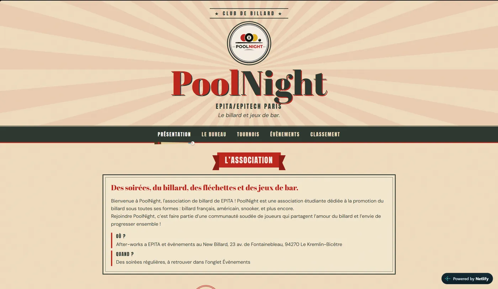
06Site interactif pour PoolNight, l'association de billard et de jeux de bar de l'EPITA.
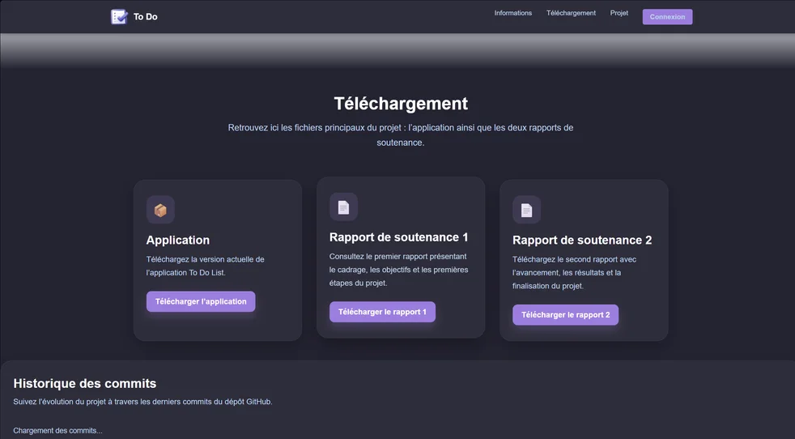
05Application de gestion de tâches développée en Rust. Elle vise à faciliter l'organisation du quotidien grâce à des algorithmes de tri automatique. Le projet comprend également un site de présentation et de téléchargement.
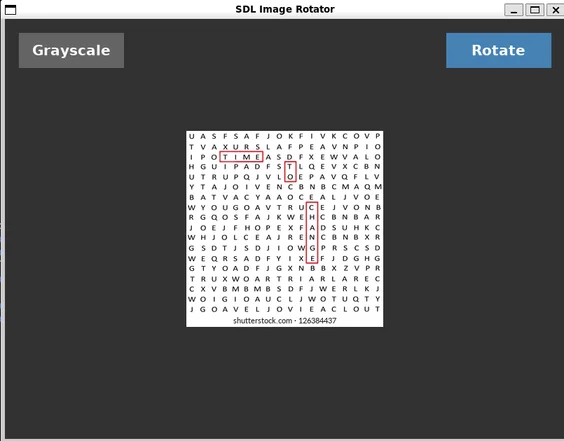
04Projet associant un réseau neuronal à une interface graphique. J'ai pris en charge l'interface : rotation et passage en niveaux de gris de l'image, affichage de la grille et mise en évidence des mots détectés.
Voir le détail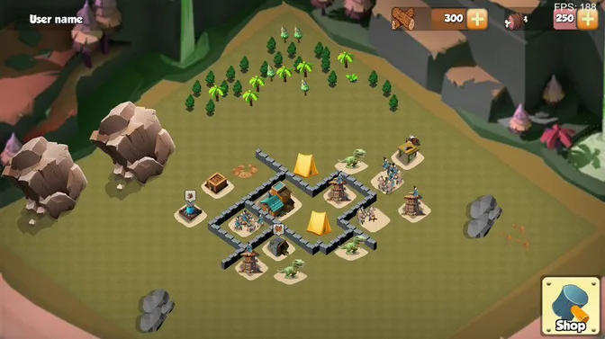
03Jeu de gestion développé en C# en équipe. Le joueur construit, organise et défend son village. J'étais responsable du développement des mécaniques de jeu dans un projet intégrant contraintes utilisateurs et organisation collective.
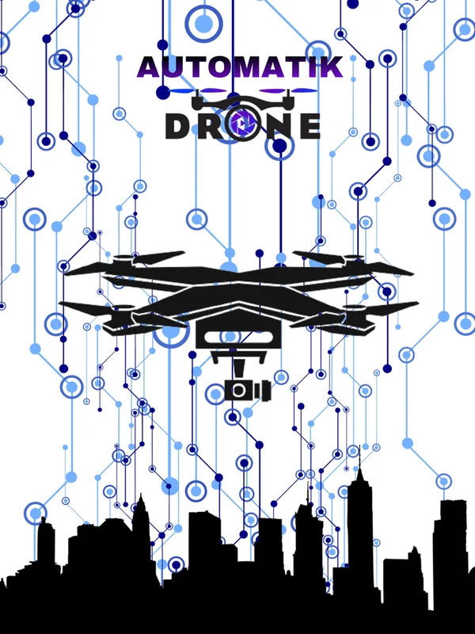
02Prototype en Python conçu pour assister les arbitres de volley-ball. Le projet exploite les entrées caméra et le pilotage d'un drone. J'ai développé la partie contrôle et travaillé sur plusieurs modes de commande.
Voir le détail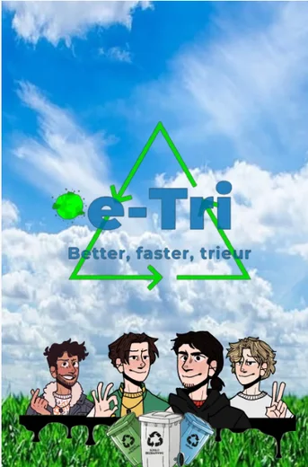
01Application créée pour aider les utilisateurs à trier leurs déchets. Développée en Python puis adaptée à Android, elle identifie la catégorie du déchet et indique les points de collecte. Le projet a concouru au Trophée NSI dans la catégorie écologie.
Voir le détailMon parcours
Des expériences professionnelles, internationales et associatives qui ont renforcé ma rigueur, mon adaptabilité et mon sens du collectif.
Cuisine professionnelle
Première expérience en cuisine professionnelle, dans une brasserie qui fait aussi traiteur.
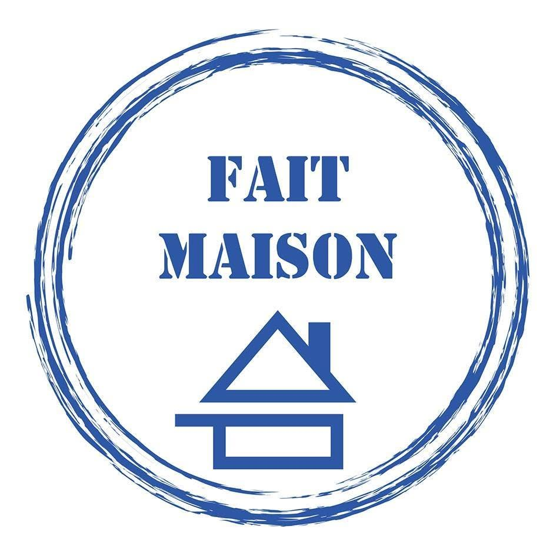
Cuisine professionnelle
Participation à la préparation et au dressage de repas et de réceptions dans un environnement exigeant. Ces missions développent la rigueur, la précision, la gestion du temps et la coordination en brigade.
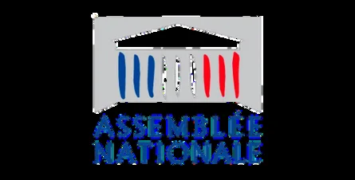
Expérience internationale
Immersion professionnelle aux États-Unis dans un restaurant français, en cuisine comme en salle. Cette expérience m'a permis de travailler en anglais, de gagner en polyvalence et de m'adapter à une nouvelle équipe et à d'autres habitudes de travail.
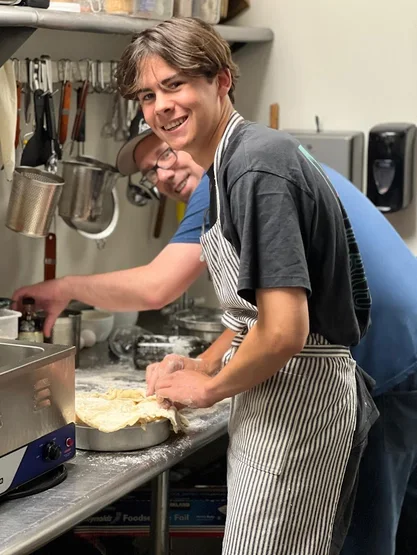
Animation
Encadrement de séjours de vacances et d'auberges : conception d'activités, accompagnement de la vie quotidienne, sécurité des participants et création d'une dynamique de groupe.
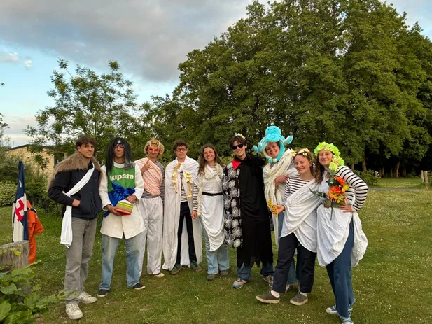
Engagement associatif
Participation à des projets éducatifs et collectifs fondés sur le bénévolat et la transmission. Cet engagement renforce mon leadership, mon organisation, ma capacité à communiquer et mon goût du travail en équipe.
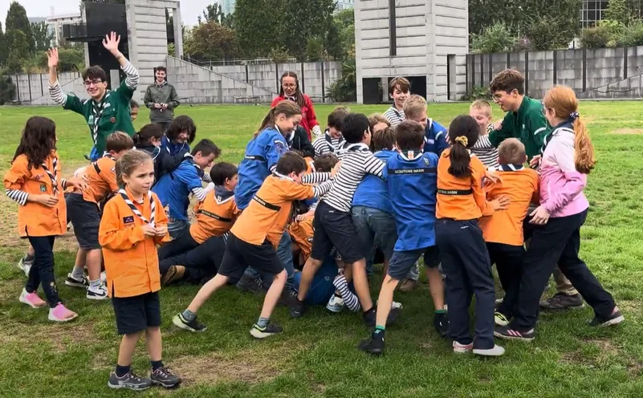
Au-delà du code
Deux passions qui développent la persévérance, la maîtrise de soi, l'autonomie et le goût de la transmission.
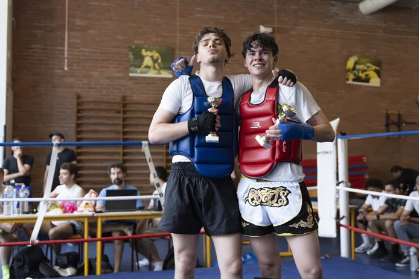
01Depuis 2021 · Compétition
Je pratique le muay-thaï depuis 2021 et j'ai commencé la compétition après plusieurs périodes d'arrêt liées à des blessures. Je m'entraîne au MB Fight de l'Université Jussieu à Paris. Cette discipline m'apporte persévérance, maîtrise de soi et capacité à progresser dans la difficulté.
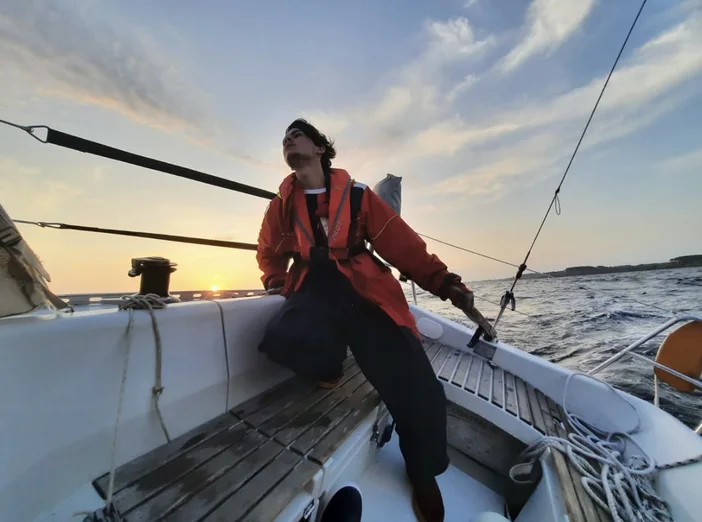
02Depuis 2023 · Encadrement
J'ai découvert la voile en août 2023 lors d'une navigation de deux semaines en Bretagne sud. Je suis désormais qualifié pour encadrer des débutants et des enfants, titulaire du permis bateau et en préparation d'un nouveau diplôme. J'aime particulièrement associer navigation, animation et transmission.
Pour aller plus loin
Retrouvez une présentation détaillée de mon parcours et mon CV à jour.
Échangeons
Je suis disponible pour échanger autour d'un projet, d'une opportunité ou d'une expérience internationale.